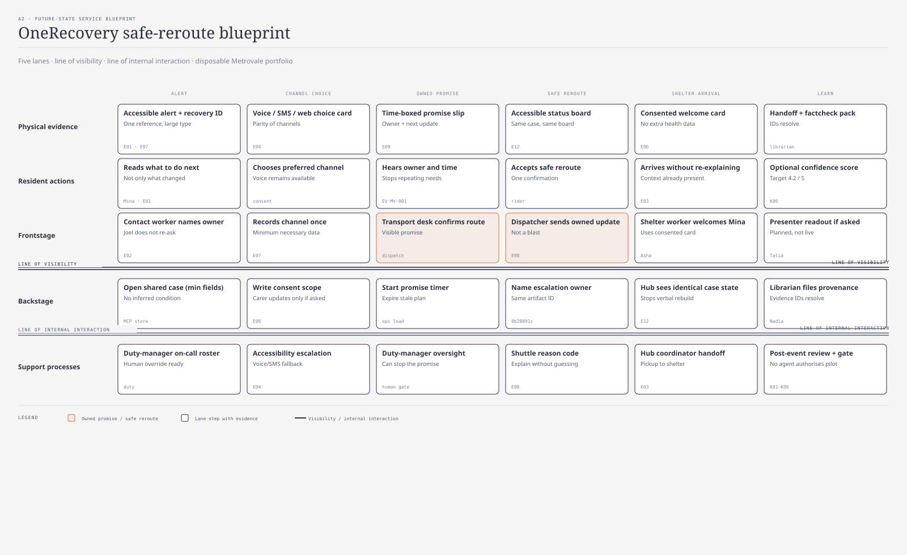

service-blueprint · Kai · @sd-mapper · review Marcus · vetoed then passed · 0b28891c

| Lane | Change | Owner | Control |
|---|---|---|---|
| Physical evidence | One recovery reference | librarian Nadia | provenance check |
| Resident actions | Channel choice and explicit preference | designer + contact worker | consent |
| Frontstage | Named owner and next update time | duty team / Joel | service standard |
| Backstage | Minimum handoff, timer, named escalation | operations lead | access audit |
| Support processes | Escalation and learning loop | duty manager | human gate |